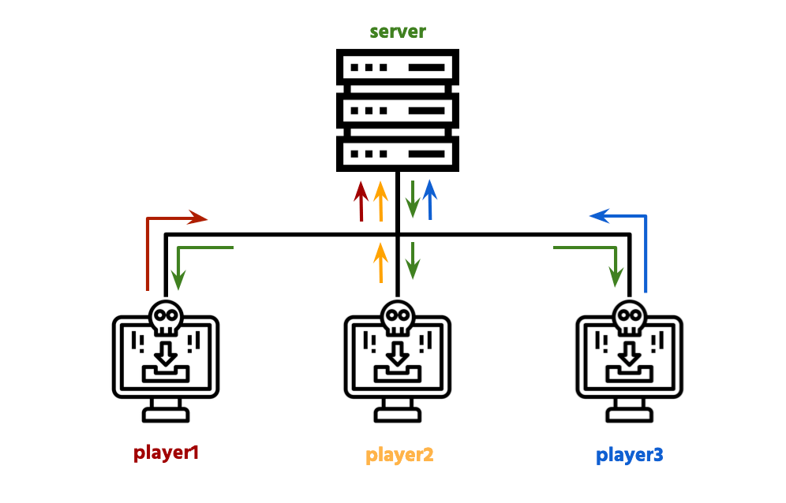
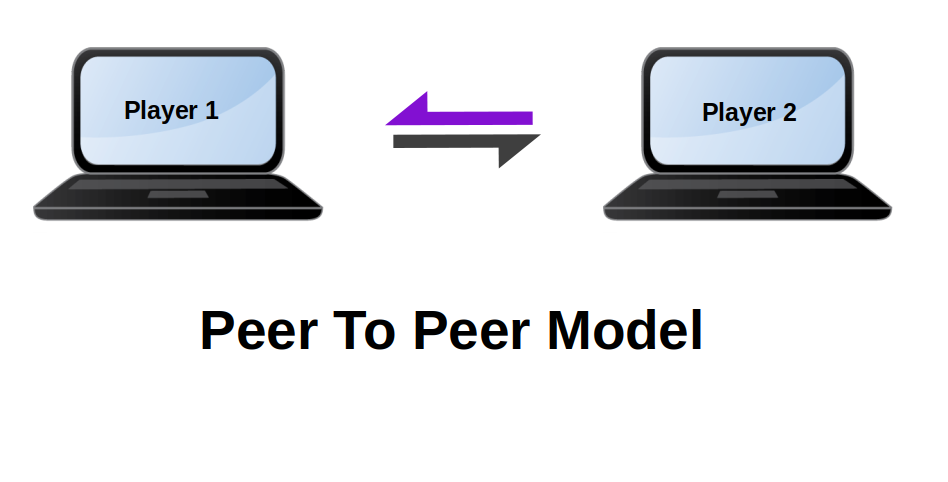
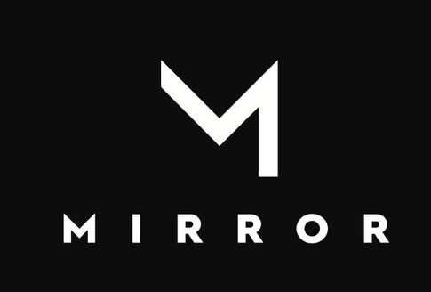
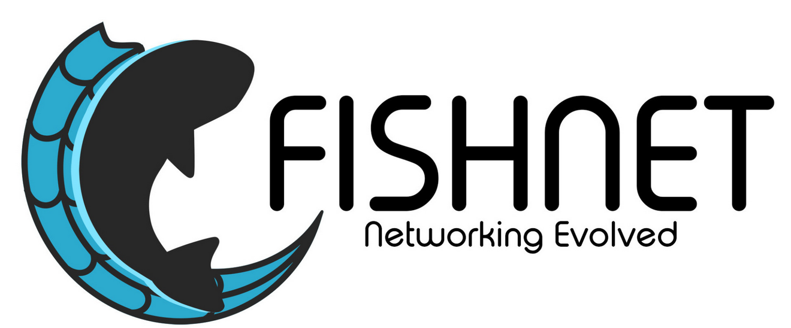

3.1 Conceptes bàsics de xarxes aplicats a videojocs
En aquesta unitat, explorarem els conceptes bàsics de les xarxes en el context dels videojocs multijugador. Entendre com funcionen les xarxes és essencial per a desenvolupar jocs que permetin la interacció entre múltiples jugadors en línia.
Models de xarxes
Hi ha diversos models de xarxes que es poden utilitzar en el desenvolupament de videojocs multijugador, però els més comuns són:
- Model client-servidor: En aquest model, hi ha un servidor central que gestiona la lògica del joc i els clients es connecten a aquest servidor per participar en el joc. El servidor és responsable de mantenir l'estat del joc i coordinar les interaccions entre els clients.
- Model peer-to-peer (P2P): En aquest model, cada client es connecta directament amb els altres clients sense la necessitat d'un servidor central. Cada client és responsable de mantenir l'estat del joc i coordinar les interaccions amb els altres clients.
Xarxes client-servidor
En un model de xarxa client-servidor, hi ha dos tipus principals d'entitats: el servidor i els clients. El servidor és responsable de gestionar la lògica del joc, mantenir l'estat del joc i coordinar les interaccions entre els clients. Els clients, d'altra banda, són les màquines dels jugadors que es connecten al servidor per participar en el joc.

Aquest model utilitza un model d'autoritat de servidor, on el servidor té el control total sobre l'estat del joc i els clients només poden enviar sol·licituds al servidor per realitzar accions. Això ajuda a prevenir trampes i a mantenir la integritat del joc.
Dins d'aquest model, hi ha 2 arquitectures principals:
- Servidor dedicat: On el servidor és una màquina dedicada que només s'encarrega de gestionar el joc. Aquesta és la millor opció per a jocs amb molts jugadors, ja que el servidor pot manejar una gran quantitat de connexions i mantenir un rendiment estable.
- Servidor no dedicat: On un dels clients actua com a servidor, gestionant el joc mentre també participa com a jugador. Aquesta opció és adequada per a jocs amb pocs jugadors, però pot tenir problemes de rendiment i seguretat si el client que actua com a servidor no és prou potent o si es produeixen desconnexions.
Xarxes peer-to-peer (P2P)
En aquest model, cada client es connecta directament amb els altres clients sense la necessitat d'un servidor central. Cada client és responsable de mantenir l'estat del joc i coordinar les interaccions amb els altres clients.

Aquest model utilitza un model d'autoritat distribuïda, on cada client té el control sobre una part de l'estat del joc i coordina les interaccions amb els altres clients. Això pot ser més eficient en termes de latència, ja que les comunicacions es realitzen directament entre els clients, però pot ser més difícil de gestionar i mantenir la integritat del joc, especialment si hi ha molts jugadors o si es produeixen desconnexions.
Un altre disadvantage del model P2P és que pot ser més vulnerable a trampes i a atacs de seguretat, ja que no hi ha un servidor central que puga supervisar i controlar les accions dels clients.
Comparativa dels models
Les majors diferències entre aquests dos models es poden resumir en els següents punts:
- Cost: El model client-servidor pot ser més costós de implementar i mantenir, ja que requereix un servidor dedicat i una infraestructura de xarxa robusta. El model P2P pot ser més econòmic, ja que no requereix un servidor central, però pot tenir problemes de rendiment i seguretat.
- Seguretat: El model client-servidor és més segur, ja que el servidor té el control total sobre l'estat del joc i pot prevenir trampes i atacs. El model P2P és més vulnerable a trampes i atacs, ja que no hi ha un servidor central que supervise les accions dels clients.
- Latència: El model P2P pot oferir una latència més baixa, ja que les comunicacions es realitzen directament entre els clients. El model client-servidor pot tenir una latència més alta, ja que les comunicacions han de passar pel servidor. Depenent de la ubicació dels jugadors i del servidor, aquesta latència pot variar significativament. També depèn de la capacitat i connexió del servidor.
Models d'autoritat
Els jocs multijugador són jocs que es juguen entre moltes instàncies de joc diferents. Cada instància de joc té la seva pròpia còpia del món del joc i dels comportaments dins d'aquest món del joc. Per tenir una experiència de joc compartida, cada objecte en xarxa ha de tenir una autoritat.
L'autoritat d'un objecte en xarxa té el poder final per prendre decisions definitives sobre aquest objecte. Cada objecte ha de tenir una i només una autoritat. L'autoritat té el control final sobre tot l'estat i el comportament d'aquest objecte.
La instància de joc autoritària és la instància de joc que té autoritat sobre un objecte en xarxa determinat. Aquesta instància de joc és responsable de simular el comportament del joc en xarxa. L'autoritat és capaç de mediar els efectes del retard de la xarxa i és responsable de reconciliar el comportament si molts jugadors intenten interactuar simultàniament amb el mateix objecte.
Model d'autoritat de servidor
El model d'autoritat del servidor té una única instància de joc que es defineix com el servidor. Aquesta instància de joc és responsable d'executar la simulació principal i de gestionar tots els aspectes de l'execució del joc en xarxa. L'autoritat del servidor és el model d'autoritat utilitzat per a jocs client-servidor.
El model d'autoritat del servidor té la força de proporcionar una autoritat centralitzada per gestionar qualsevol possible conflicte d'estat del joc. Això permet la implementació de sistemes com ara la reversió de l'estat del joc i la predicció competitiva de clients. Tanmateix, això pot tenir com a cost afegir latències, perquè tots els canvis d'estat s'han d'enviar a la instància del joc del servidor, processar-los i després enviar-los a altres instàncies del joc.
Els jocs d'autoritat del servidor també poden consumir molts recursos. El servidor executa la simulació per a tot el món del joc, de manera que el servidor ha de ser prou potent per gestionar la simulació i la creació de xarxes de tots els clients de joc connectats. Aquest requisit de recursos pot arribar a ser car.
L'autoritat del servidor s'utilitza principalment en jocs sensibles al rendiment, com ara els jocs de dispars en primera persona (First Person Shooter) o els jocs competitius on cal tenir una autoritat de servidor central per minimitzar les trampes i els efectes dels mals actors.
Model d'autoritat distribuïda
El model d'autoritat distribuïda comparteix l'autoritat entre instàncies de joc. Cada instància de joc és l'autoritat per a una subdivisió dels objectes en xarxa del joc i és responsable d'executar la simulació per a la seva subdivisió d'objectes. Les actualitzacions es comparteixen des d'altres instàncies de joc per a la resta de la simulació.
L'autoritat de cada objecte en xarxa és responsable de simular el comportament i gestionar qualsevol aspecte de l'execució del joc en xarxa que es relacione amb els objectes dels quals té autoritat.
Com que els jocs d'autoritat distribuïda comparteixen la simulació entre cada client connectat, consumeixen menys recursos. Cada màquina connectada al joc processa una subdivisió de la simulació, de manera que cap màquina individual necessita tindre la capacitat de processar tota la simulació. Això resulta en una experiència de joc multijugador que es pot executar en màquines més econòmiques i que consumeix menys recursos.
Models de propietat
Entendre com funciona la propietat d'objectes en xarxa és essencial per a entendre l'autoritat.
Per defecte, Netcode per a GameObjects assumeix una topologia client-servidor, en què el servidor és propietari de tots els objectes (amb algunes excepcions) i té l'autoritat final sobre el generació i la desaparició.
Netcode per a GameObjects també admet la creació de jocs amb una topologia d'autoritat distribuïda, que proporciona més opcions de propietat i autoritat.
Propietat en una topologia client-servidor
En una topologia client-servidor, el servidor té l'autoritat definitiva sobre tots els objectes de xarxa. Els clients poden sol·licitar la propietat d'objectes específics, però el servidor té l'última paraula sobre si concedeix o denega aquestes sol·licituds.
Propietat en autoritat distribuïda
En un entorn d'autoritat distribuïda, l'autoritat sobre els objectes de xarxa no està lligada a un únic servidor, sinó que es distribueix entre els clients en funció de la configuració de permisos de propietat d'un objecte de xarxa. Els objectes de xarxa amb permisos distribuïbles es distribueixen automàticament entre els clients a mesura que es connecten i es desconnecten.
Per exemple, un client que inicia una sessió d'autoritat distribuïda es converteix en el propietari dels seus objectes de xarxa, com el player, i crea una sèrie d'objectes de xarxa distribuïbles. A mesura que altres clients s'uneixen, aquests objectes es distribueixen entre els clients connectats, de manera que cada client té autoritat sobre una part dels objectes de xarxa del joc.
Complements de Unity per a la creació de jocs en xarxa
Existeixen varis complements de Unity que faciliten la creació de jocs en xarxa. Però abans de triar un complement, és important considerar les necessitats específiques del teu joc i les característiques que ofereix cada complement.
Comprensió de l'ecosistema multijugador
L'arquitectura multijugador és inherentment complexa perquè implica molt més que simplement connectar jugadors a través d'una xarxa. Cada decisió que prens en dissenyar el teu joc multijugador afecta aspectes crítics com la gestió de la latència, la sincronització d'objectes, la seguretat, l'emparellament, la persistència de la sessió i l'experiència general del jugador.
Per tant, la conversa no és sobre quina eina és objectivament "millor", sinó quin marc de treball s'alinea amb els requisits del teu projecte, com:
- Gènere de joc: Els jocs FPS o MOBA de ritme ràpid requereixen actualitzacions de baixa latència i alta freqüència, mentre que els jocs d'aventura per torns o cooperatius poden prioritzar la consistència de l'estat per damunt de la velocitat.
- Requisits d'escala: Un joc que admet pocs jugadors enfront d'un altre que admet milers d'usuaris concurrents exigeix diferents estratègies de xarxa, arquitectures de servidor i enfocaments d'optimització.
- Models d'autoritat de xarxa: Triar entre configuracions autoritàries de servidor o client afecta la prevenció de trampes, la resolució de conflictes i la sincronització.
- Pressupost i al calendari: Les solucions propietàries gestionades estalvien esforç de desenvolupament però costen més, mentre que els marcs de codi obert com Mirror necessiten més temps però permeten una personalització completa.
- Allotjament de servidors: les configuracions dedicades, al núvol o híbrides han de coincidir amb la concurrència dels jugadors, les necessitats de latència i la distribució geogràfica.
- Necessitats de XR o multiplataforma: els jocs en ecosistemes de realitat virtual, realitat augmentada o multiplataforma introdueixen restriccions addicionals, com ara la sincronització física, la predicció de moviment i la gestió de la latència específica del dispositiu.
El disseny de la xarxa afecta directament la jugabilitat i l'experiència del jugador. Una latència mal gestionada pot causar teletransportació de personatges, accions retardades o estats d'objectes inconsistents, cosa que redueix la retenció del jugador. Una atenció acurada a l'autoritat client/servidor, la sincronització i els mecanismes de reversió és essencial per a una experiència multijugador fluida i fiable.
Passem a veure els marcs de treball més populars per a jocs multijugador a Unity, començant per la solució oficial de Unity.
Unity Netcode per a GameObjects (NGO)
Ideal per a: fluxos de treball natius d'Unity, jocs cooperatius menuts, integració estreta del motor.
Unity Netcode for Game Objects (NGO) és el marc de xarxa oficial d'Unity dissenyat per a una integració estreta amb el motor. Prioritza la simplicitat, la modularitat i el control de baix nivell. En conseqüència, els equips que busquen una solució nativa del motor compatible amb Unity sovint consideren Netcode abans de res.
Punts forts de NGO
- Integració estreta del motor: es sincronitza de forma natural amb el cicle de vida d'Unity, els sistemes d'entrada, la gestió d'escenes i els fluxos de treball dels components.
- Model autoritatiu predictible: fomenta l'arquitectura autoritativa del servidor, adequada per a jocs competitius i cooperatius que requereixen actualitzacions d'estat validades.
- Ideal per a multijugador a petita escala: és adequat per a jocs de 2 a 10 jugadors que requereixen accions sincronitzades, objectes compartits i un rendiment predictible.
Limitacions de NGO
- Suport limitat a gran escala sense una personalització significativa
- Requereix coneixements profunds de xarxes per a mecàniques complexes.
- Cicles d'iteració més lents a causa de les dependències de l'ecosistema Unity
- Menys Recursos d'aprenentatge que Photon o Mirror
- Menys provat per a jocs competitius PvP o MMO
Enllaç: Unity Netcode for GameObjects
Mirror
Ideal per a: Arquitectures flexibles, transports personalitzats, fluxos de treball de codi obert, projectes impulsats per la comunitat.

Mirror s'utilitza àmpliament a la comunitat multijugador indie i de mitjana escala per la seva flexibilitat i naturalesa de codi obert. Amplia el llegat d'UNet alhora que reconstrueix els seus punts febles en una pila de xarxa modular i de bon rendiment.
Punts forts clau de Mirror
- Codi obert i impulsat per la comunitat: Actualitzacions freqüents, pegats i optimitzacions de col·laboradors actius.
- Capes de transport altament flexibles: Admet múltiples transports i permet integrar servidors personalitzats.
- Ideal per a jocs en temps real de mitjana escala: Adoptat en aventures cooperatives, jocs multijugador basats en sessions, experiències de realitat virtual i prototips competitius.
Limitacions de Mirror
- Requereix més esforç d'enginyeria per a projectes grans
- La qualitat de la documentació varia
- No hi ha serveis al núvol integrats; es necessiten sistemes externs per a emparellament, relays i escalat.
Enllaç: Mirror
Photon Fusion / PUN
Ideal per a: Multijugador ràpid, acció en temps real, gran concurrència, escalabilitat multiplataforma.
Photon és una de les solucions de xarxa més adoptades a nivell mundial. Proporciona un ecosistema complet que inclou allotjament, xarxes de retransmissió (relay), emparellament, gestió de sessions i anàlisi.
Punts forts clau de Photon
- Infraestructura allotjada al núvol i optimitzada globalment: Redueix la càrrega d'enginyeria alhora que proporciona una latència predictible entre regions.
- Optimitzat per a multijugador d'alta velocitat: Photon Fusion ofereix compensació de lag, rollback, sistemes de predicció i sincronització d'estat determinista.
- Escalabilitat multiplataforma: Admet mòbils, PC, consoles, AR/VR i WebGL.
Limitacions de Photon
- Els costos escalen amb el nombre de jugadors
- Menys personalitzable en comparació amb Mirror
- Alguns desenvolupadors se senten lligats a la infraestructura de Photon
- Els comportaments avançats són de pagament
Enllaç: Photon Engine
Triar el marc de treball adequat: un desglossament pràctic
Seleccioneu Unity Netcode si:
- El joc és a petita escala (2-10 jugadors)
- Voleu el suport propi d'Unity
- La preferència és un flux de treball simplificat
- Crear experiències cooperatives en lloc d'acció competitiva en temps real
- Voleu un control total sobre l'allotjament del servidor
Trieu Mirror si:
- Necessiteu una capa de xarxa totalment personalitzable
- Preferiu ecosistemes de codi obert
- Us sentiu còmodes construint el vostre propi backend o transports personalitzats
- Necessiteu més rendiment i flexibilitat que Netcode
- Voleu controlar l'optimització i l'ús de l'ample de banda
Trieu Photon si:
- Una solució llesta per a la producció amb allotjament inclòs.
- Crear jocs PvP ràpids o multijugador d'alta freqüència
- Escalar globalment sense gestionar servidors
- Preferiu un flux de treball estable, documentat i de nivell empresarial
- Dirigit al multijugador multiplataforma
En definitiva, l'elecció depèn de les vostres necessitats de rendiment, l'estructura de l'equip, amplada de banda d'enginyeria, gènere i objectius d'escalabilitat a llarg termini.
FishNet: L'estrella emergent
FishNet està guanyant terreny el 2025 pel seu enfocament ric en funcions, eficient en ample de banda i de codi obert. Ofereix funcions avançades com la gestió d'escenes, la predicció del costat del client i la compensació de retard, cosa que el fa ideal per a jocs d'acció en temps real.

Característiques principals:
- Gestor d'escenes per a la càrrega i visibilitat del costat del client
- Ús eficient de l'ample de banda
- Gratuït i de codi obert, amb suport actiu
Avantatges:
- Menor amplada de banda i millor escalabilitat que alguns competidors
- Fàcil d'ampliar i personalitzar
- Sense quotes de llicència
Contres:
- Comunitat més petita que Photon o Mirror
- Menys serveis de backend integrats (matchmaking, relay)
Enllaç: FishNet